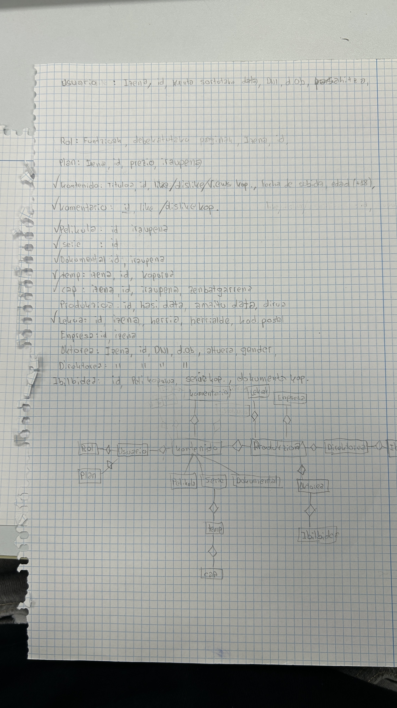
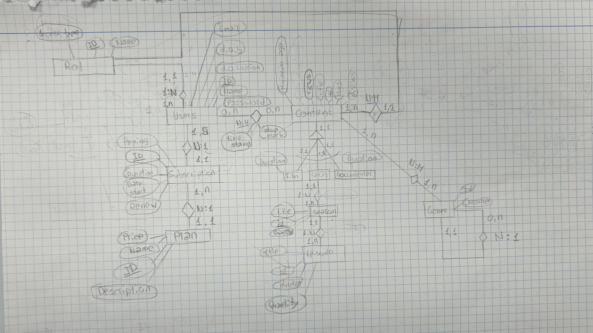
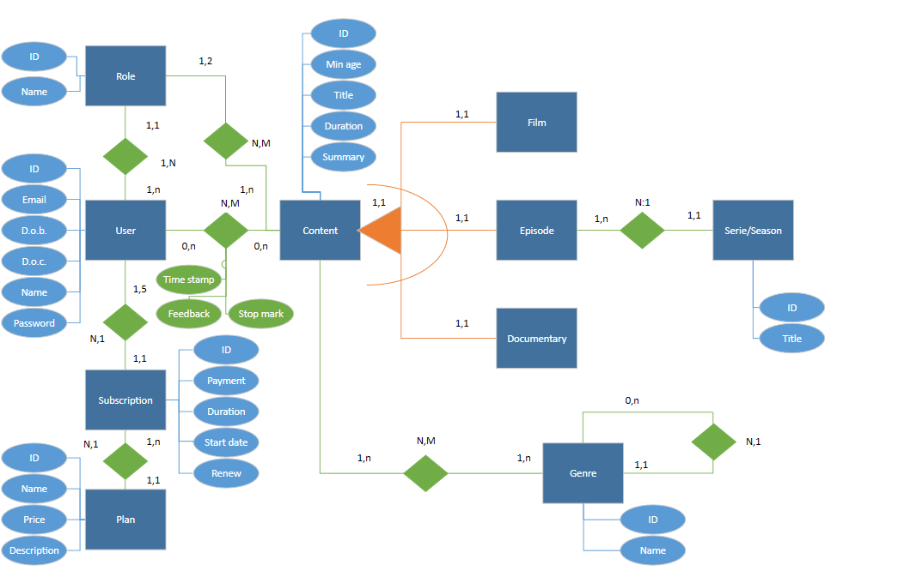
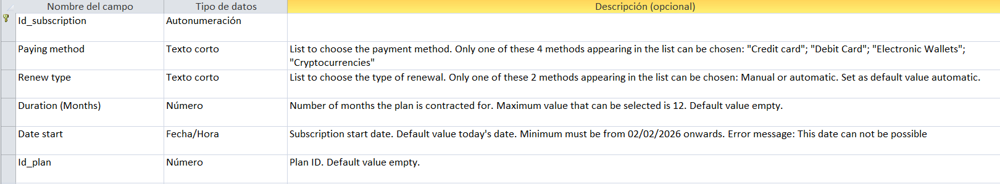
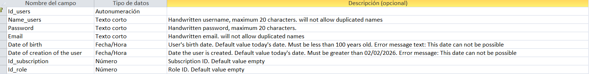
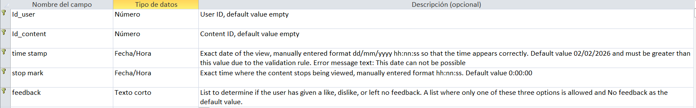
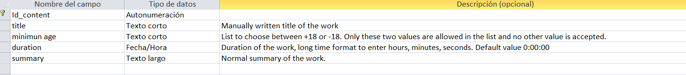
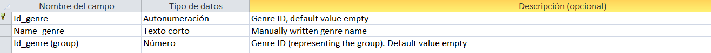
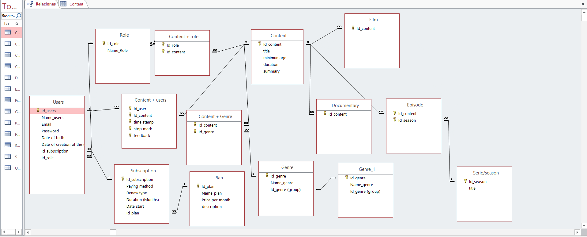

Datu baseak - Proiektuaren Dokumentazioa
1. Brainstorming and general idea
1.1. Brainstorming
We held a brainstorming session to generate as many ideas as possible. With it we identified most of the entities and attributes of the final database.
1.2. General idea
We then linked the ideas together and adapted them to our website, designing an initial schema that was clear and easy to build. This made the E-R diagram easier to create.

2. E/R diagram
2.1. Final Entity-Relationship (ER) diagram design
The final design was made in three steps:
- Streamline the schema to our real needs (we discarded the production section and the "Komentario" entity).
- Draw it on paper with all attributes, cardinalities and the precise notation.
- Correct the errors found to reach the definitive draft.

2.2. Digitize the E/R diagram
We transferred the pencil draft to Microsoft Visio using its shapes and connectors, with a different color for each element (for example, green for relationships).

2.3. Explanation
The database stores the data of a company with a web platform similar to Netflix.
- User: name, ID, password, account creation date, date of birth and email. Each user has one subscription and one role.
- Subscription and plan: there are 4 plans (individual basic, individual premium, family basic and family premium). Splitting them into two entities lets us identify users sharing a family plan. A subscription has between 1 and 5 users and is linked to one plan; a plan can have many subscriptions.
- Plan: name, ID, price per month and description.
- Subscription: ID, payment method, duration, start date and renewal type (automatic or manual).
- Role: only two exist, adults and kids. It stores name, ID and access type (complete access or under-18 content only). 18+ content is seen only by adults; children's content by both.
- Content: title, ID, minimum age, duration, likes and dislikes. A user can watch many contents and vice versa; the relationship stores the stop marker, the feedback and the timestamp of the last point watched.
- Content types: a complete exclusive ISA relation with 3 sub-entities: film, documentary and episodes. Episodes belong to a season/serie (ID and title), which has many episodes.
- Genre: ID and name, many-to-many with content. A recursive relationship handles subgenres: each genre has 0 or many subgenres, and each subgenre belongs to one genre.
3. Relational model
Primary keys are underlined and foreign keys are highlighted.
- Plan: ( IDplan, name, price, description )
- Subscription: ( IDsubscription, paying method, renew type, duration, date start, IDplan )
- Users: ( IDuser, name, password, date of birth, date of creation, email, IDsubscription, IDrole )
- Role: ( IDrole, name, access type )
- Content: ( IDcontent, title, minimum age, duration, summary )
- Film: ( IDcontent )
- Documentary: ( IDcontent )
- Episodes: ( IDcontent, IDseason )
- Serie / season: ( IDseason, title )
- Content + role: ( IDrole, IDcontent )
- Content + users: ( IDuser, IDcontent, time stamp, stop mark, feedback )
4. Normalization
4.1. Atomic values - First normal form
Our relational model does not have any repeated data, so our relational model is already in first normal form.
4.2. Functional dependency - Second normal form
All of the attributes in our relational model are fully dependent on the primary key of each table. Because of that, our relational model is also already in second normal form.
4.3. Transitive dependency - Third normal form
In our relational model, no dependency between attributes of the same table could be found. Because of that, our relational model is in third normal form and is completely normalized.
5. Access
5.1. Constraints, integrity rules and registered data
Every table has an automatic ID. Numerical fields are empty by default. Date fields default to today's date, accept dates from 02/02/2026 onwards, and show "This date can not be possible" if the date is incorrect.
5.1.1. Subscription

Payment method chosen from four options, automatic renewal by default, maximum duration of 12 months, start date later than 02/02/2026, and a foreign key to the plan.
5.1.2. User

Name and email (no duplicates, name up to 20 characters), password (up to 20 characters), date of birth (from 02/02/1926), account creation date (from 02/02/2026), and foreign keys to the subscription and the role.
5.1.3. Content + User

User ID, content ID, timestamp (dd/mm/yyyy hh:nn:ss), stop mark (default 0:00:00), and feedback (like, dislike or no feedback, the latter by default).
5.1.4. Content

Title, age rating (+18 or -18), duration (default 0:00:00), and summary.
5.1.5. Genre

Genre name and, if it is a subgenre, the ID of its parent genre.
5.1.6. Other tables

Plan (name, price in currency format, description), Role (name), Series/Season (title and season), Film, Documentary (content ID only), Episode (content ID and season ID), Content + Role and Genre + Content (only the two foreign keys).
6. Conclusion
Implementing a Database Management System (DBMS) offers big advantages over simple text files by keeping information organized and avoiding duplicates—such as saving user usernames like carlos_dev88 safely and keeping Inception's genre details in one single place. On the other hand, storing data in messy files or basic spreadsheets causes bad problems like mismatched info when updates are forgotten and broken links that leave orphan records all over the system.